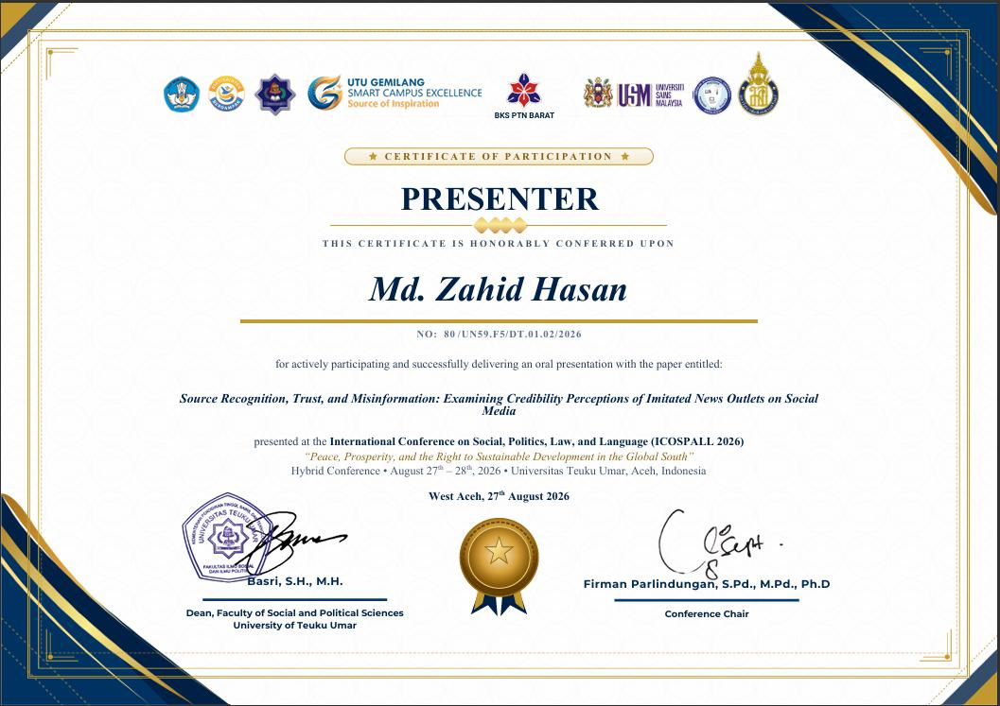
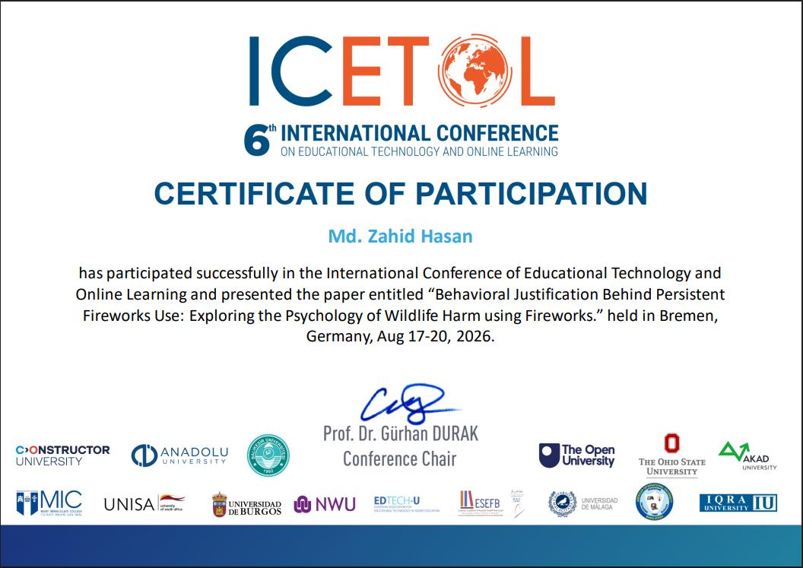
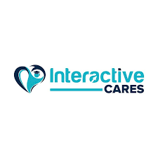
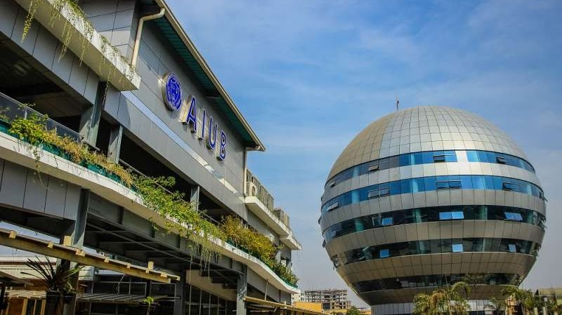
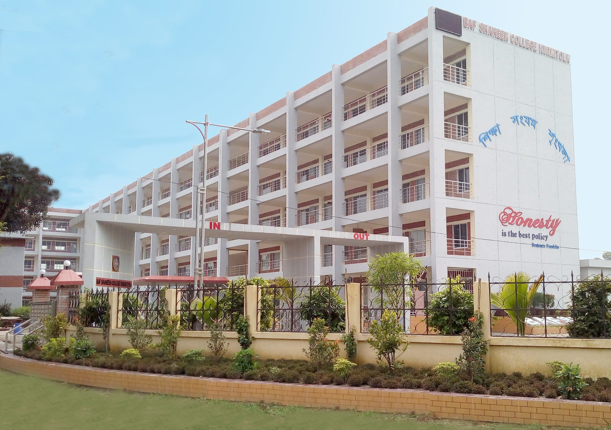
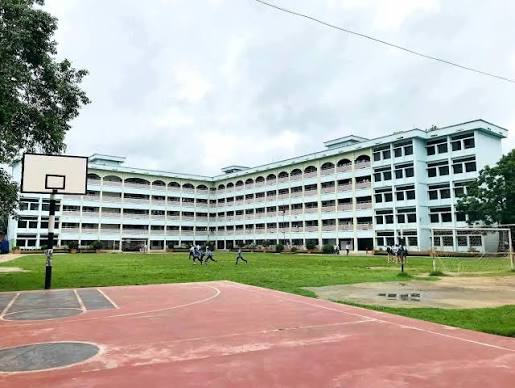

.png)
01 / 05
BANMUN 2025
Conference imagery and participant group.
Computer Science & Engineering
I build software projects, explore applied research, and turn ideas into practical systems.

I am a Computer Science and Engineering undergraduate at American International University-Bangladesh with a growing focus on software development, artificial intelligence, computer vision, databases, and applied research.
Alongside coursework, I work on software applications, technical experiments, research projects, and university initiatives. I enjoy learning by building, testing ideas, and turning concepts into practical systems.
01.1 / Beyond the screen
Conference imagery and participant group.

Presenter certificate for the paper “Source Recognition, Trust, and Misinformation: Examining Credibility Perceptions of Imitated News Outlets on Social Media.”

Certificate of participation for presenting research at the 6th International Conference on Educational Technology and Online Learning.
A collection of software and technical projects where I turn ideas, coursework, and concepts into working systems.
ChaJoy-Bangladesh is a web platform designed to provide a simple and engaging digital experience for discovering and exploring Bangladesh.
OpenGL / GLUT
Computer graphics project built around a coastal lighthouse environment using OpenGL and GLUT.
C# / Windows Forms
University club management application for clubs, members, and events with role-based access control and CRUD operations.
Software Engineering Project
Peer-to-peer carpooling platform featuring distance-based fare calculation, ride matching, system design, Agile Scrum workflow, and software testing.
OTHER PROJECTS
Smaller systems, experiments, and coursework projects.
A PC shop management system focused on database design and data management.
A traffic light controller project exploring digital logic and microcontroller concepts.
An automatic night light system built around sensors and embedded systems.
Published work, conference presentations, and ongoing research.
Published Research
Published in the proceedings of ICCTASS 2025.
Conference Presentation
Conference: ICETOL 2026
Conference Presentation
Conference: ICOSPALL 2026
Ongoing Research
Focus: NLP, text classification, and text-noise experimentation.
Ongoing Research
Focus: CNN, YOLO, computer vision, and classroom behavior classification.
Explore the tools I use, where they fit in my work, and my self-rated proficiency.
01 Programming
C++ features in my coastal lighthouse graphics scene, while C# and SQL support my ClubHub desktop application. Java and Python round out my programming toolkit.
 JavaStrong · 82%
C+
JavaStrong · 82%
C+ C++Strong · 82%
C#
C++Strong · 82%
C# C#Strong · 78%
Py
C#Strong · 78%
Py PythonWorking · 62%
PythonWorking · 62%
02 Database
SQL supports the club, member, and event records in ClubHub. I also work with MySQL and SQL Server for relational data tasks.
 MySQLWorking · 75%
MS
MySQLWorking · 75%
MS SQL ServerWorking · 72%
SQL ServerWorking · 72%
03 Web development
I use HTML and CSS to shape web pages, then JavaScript to add interaction—including the experience and motion on this portfolio.
 HTMLStrong · 82%
#
HTMLStrong · 82%
# CSSWorking · 75%
JS
CSSWorking · 75%
JS JavaScriptWorking · 65%
JavaScriptWorking · 65%
04 AI & computer vision
My current focus is building practical familiarity with object detection, image classification, and computer-vision workflows.
 OpenCVFamiliar · 58%
OpenCVFamiliar · 58%
05 Tools
Git and GitHub support version control; Visual Studio and MATLAB help with development work, while Figma and Canva support visual planning. I also use Vercel in my web workflow.
 GitVersion control
GH
GitVersion control
GH GitHubRepositories
VS
GitHubRepositories
VS Visual StudioDevelopment
M
Visual StudioDevelopment
M MATLABTechnical work
F
MATLABTechnical work
F FigmaInterface design
C
FigmaInterface design
C CanvaVisual design
V
CanvaVisual design
V VercelWeb workflow
VercelWeb workflow
A record of the communities I’ve supported, the roles I’ve taken on, and the recognition I’ve earned along the way.
.jpeg)
Campus Ambassador
Contributing to community-focused campus activities as a Campus Ambassador.

Researcher
Participating in research discussions and helping organize research-focused sessions.
Associate Member
Associate member with event logistics experience from BANMUN 2025.
.jpeg)
Campus Ambassador
Representing the English Olympiad on campus and supporting event-related activities.

Campus Leader · Completed
Completed the Campus Leader program and received Best Performer recognition, Batch 3.

Bachelor's Degree
01 / 03
Higher Secondary
02 / 03
Secondary
03 / 03Certifications, recognition, and moments from work beyond the classroom.
Let's talk about software, research, collaboration, or a project worth building.
zahid.hasan.8910@gmail.com ↗.jpeg)

.jpg)